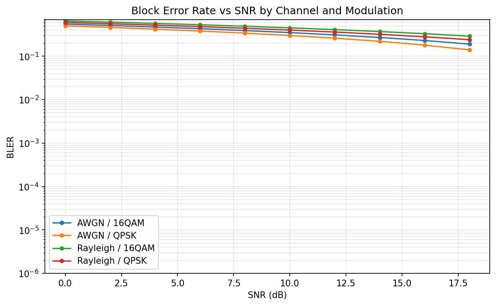

Run ID: pipeline_test_run

BLER generally decreases as SNR increases, as expected: higher signal-to-noise ratio improves reliability. Rayleigh fading typically requires higher SNR than AWGN to achieve the same BLER, because fading introduces additional variability. 16QAM is less robust than QPSK at low SNR, since higher-order modulation carries more bits per symbol and is more sensitive to noise. The curves in the plot above summarize these effects across channel types and modulations.
Overall, this run aggregated 120 simulation points, with mean BLER 0.3950, mean BER 0.039500, and mean effective throughput 1.7900 bits/symbol.
Per channel/modulation: AWGN-16QAM (BLER=0.3700, throughput=2.5200), AWGN-QPSK (BLER=0.3200, throughput=1.3600), Rayleigh-16QAM (BLER=0.4700, throughput=2.1200), Rayleigh-QPSK (BLER=0.4200, throughput=1.1600).